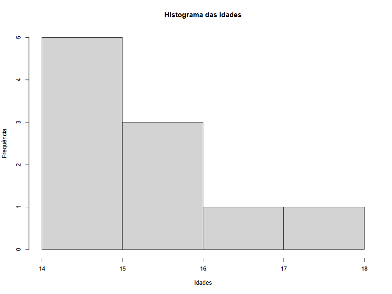
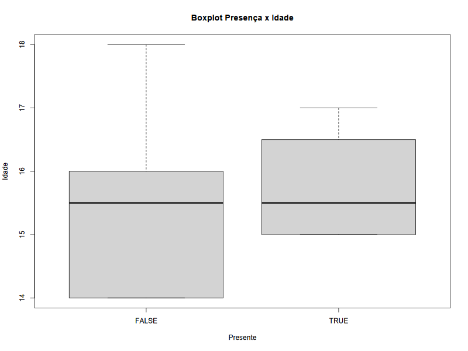
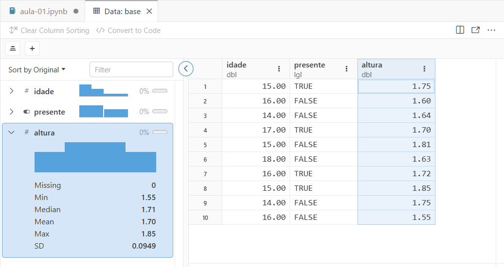
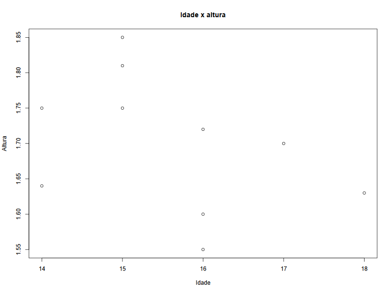
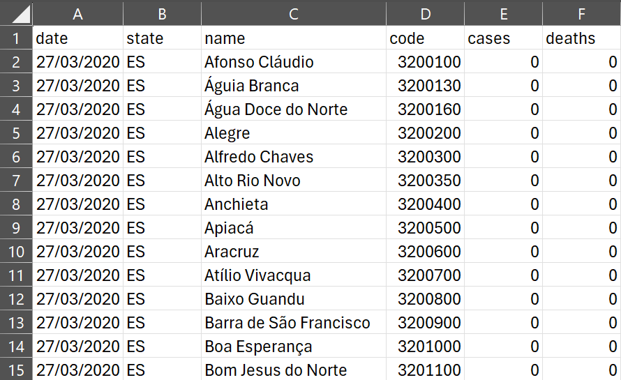

2. Princípios básicos de programação em R com notebooks (continuação)
Continuaremos a introdução à linguagem R com os mesmos dados do primeiro notebook:
# importa bibliotecainstall.packages('openxlsx')library(openxlsx)# vetor das idadesidade <- c(15, 16, 14, 17, 15, 18, 16, 15, 14, 16)# vetor com verdadeiro/falsobooleano <- c(TRUE, FALSE, FALSE, TRUE, FALSE, FALSE, TRUE, TRUE, FALSE, FALSE)# vetor dos psicólogospsicologos <- c("Piaget", "Vygotsky", "Skinner", "Wallon", "Bronfenbrenner", "Gibson")# cria um data.frame a partir dos dois vetores anterioresbase <- data.frame("idade"=idade,"presente"=booleano)# exibe data.frameView(base)
Warning: package ‘openxlsx’ is in use and will not be installed
2.2 Funções
Até o momento, utilizamos o termo função de modo intuitivo. Podemos entendê-las como procedimentos que realizam operações sobre dados e que podem receber argumentos ou não.
# sem argumentosfuncao()# um ou mais argumentosfuncao(argumento1, argumento2, ...)
Os argumentos da função são informados entre parênteses, separados por vírgulas, e as operações que ela realiza internamente se chamam corpo. Até o momento utilizamos funções com um argumento…
# um argumentoprint("Esta é uma função de argumento único!")
[1] "Esta é uma função de argumento único!"
A função mean() pode ser utilizada com um único argumento (vetor) e pode receber adicionais que ajustam sua operação. Estes argumentos podem ou não ser identificados, pois a linguagem tenta interpretá-los em tempo de execução. O argumento na.rm com valor TRUE informa à função que deve remover as células vazias do cálculo da média. Quando o valor for FALSE, a função retornará um erro ao calcular médias com células vazias.
# dois argumentosmean(idade, na.rm = TRUE)
[1] 15.6
Já a função c(), que constrói vetores, pode receber inúmeros argumentos:
O console de Positron permite invocar a ajuda de todas as funções da linguagem e dos pacotes adicionais por meio da combinação do símbolo ? e o nome da função.
?print
Dica: A ajuda exibida com a execução deste comando é similar àquela exibida quando começamos a digitar o nome da função nas células de código, poré mais completa e inclui exemplos.
Há funções de propósito geral para exibição de textos em R, que nos ajudam a inspecionar objetos em uso pelo script.
print(): imprime no console (ou notebook) uma string, o valor de uma variável, uma expressão…
cat(): semelhante a print(), porém com a opção de concatenar tipos de dados separados por espaço. Requer quebra de linha explícita ao final (\n);
substr(): extrai caracteres de uma string;
paste(): concatena duas ou mais strings;
length(): retorna o comprimento de vetores;
nchar(): retorna o comprimento de strings;
unique(): retorna os valores únicos de um vetor (inclusive números).
# imprime texto, número e vetorprint("Saída de texto")print(3.14)print(idade)# concatena texto e vetor e termina com quebra de linhacat("O conteúdo do vetor de idades é:",idade,"\n")# extrai e imprime os caracteres de 18 a 27print(substr("Extraindo apenas esta parte",18,27))# retorna o comprimento do vetor idade (10 itens)print(length(idade))# retorna o comprimento de uma string (37 caracteres)print(nchar("Esta é uma função de argumento único!"))# concatena stringsprint(paste("A primeira parte","e a segunda parte","e a terceira parte."))# mostra idades únicasprint(unique(idade))
[1] "Saída de texto"
[1] 3.14
[1] 15 16 14 17 15 18 16 15 14 16
O conteúdo do vetor de idades é: 15 16 14 17 15 18 16 15 14 16
[1] "esta parte"
[1] 10
[1] 37
[1] "A primeira parte e a segunda parte e a terceira parte."
[1] 15 16 14 17 18
Algumas funções da linguagem R nos ajudam a explorar a estrutura de data.frames:
summary(): medidas-resumo da base;
head(): primeiras linhas;
tail(): últimas linhas;
nrow(): número de linhas;
ncol(): número de colunas;
colnames(): rótulos das colunas;
rownames(): rótulos das linhas (quando não houver, retornará strings com números).
# resumosummary(base)
idade presente
Min. :14.0 Mode :logical
1st Qu.:15.0 FALSE:6
Median :15.5 TRUE :4
Mean :15.6
3rd Qu.:16.0
Max. :18.0
A função hist() gera um histograma a partir da variável idade do data.frame. Para isso, recebe como argumentos um vetor de dados e um título (argumento main). O seletor $ indica qual coluna de base será utilizada na visualização.
# plota histogramahist(base$idade, main="Histograma das idades", xlab="Idades",ylab="Frequência")

A função as.factor() converte os níveis de varíaveis (colunas) de data.frames para categorias. No exemplo a seguir, coluna presente é transformada em categorias (TRUE e FALSE) e exibe a distribuições das idades em cada uma delas.
# transforma TRUE/FALSE em categoriabase$presente <-as.factor(base$presente)# exibe boxplotplot(x=base$presente,y=base$idade, main="Boxplot Presença x Idade", xlab="Presente", ylab="Idade")

Vamos adicionar mais um vetor de dados ao objeto base para testar a visualização em gráficos de dispersão. Para isso, utilizaremos a função cbind(), que adiciona uma nova coluna a data.frames existentes.
# novo vetor de dados com 10 alturasaltura <- c(1.75, 1.60, 1.64, 1.70, 1.81, 1.63, 1.72, 1.85, 1.75, 1.55)# adiciona colunabase <- cbind(base, "altura"=altura)
O resultado é base atualizada para incluir mais uma coluna:

Exibição de coluna adicional de base.
Assim, podemos visualizar o gráfico de dispersão de idade versus altura:
# plota idade x alturaplot(base$idade, base$altura, main="Idade x altura", xlab="Idade", ylab="Altura")

Dica: a adição de novas colunas a data.frames existentes exige que o vetor tenha o mesmo número de linhas.
Também é possível fazer a adição utilizando o seletor $, mas para testar esta alternativa, vamos remover a coluna adicionada:
Dica: é uma boa prática inicializar a coluna, com valores vazios, antes de atribuir valores, caso isso seja feito por meio do seletor $. Isso evita avisos do R quanto à tentativa de manipular colunas não existentes.
Laços são estruturas que permitem repetir conjuntos de instruções por n vezes, facilitando a varredura de vetores e data.frames para realizar operações, ler ou alterar elementos. Há dois principais tipos de laços em R:
for(expressão){...}: estabelece um contador progressivo ou regressivo, por meio da expressão entre parânteses, para a execução de operações indicadas entre chaves;
while(expressão){...}: executa operações até que a condição estabelecida pela expressão entre parênteses seja satisfeita.
# lista psicólogos do vetor pelo índice do item# 'item' será 1, 2, 3, ...for (item in1:length(psicologos)) {print(psicologos[item])}
# lista psicólogos do vetor pelo item# neste caso, 'item' recebe o valor do item, não o índice# item será "Piaget", "Vygotsky", ...for (item in psicologos) {print(item)}
# varre o data.frame até que encontre uma idade igual ou maior a 18testa.idade <-0# começa pela primeira linhalinha <-1while (testa.idade <18) {# atribui valor ao teste testa.idade <- base$idade[linha]# imprime cat("idade:",base$idade[linha],"altura:",base$altura[linha],"\n")# avança para a próxima linha linha <- linha +1}# avisa que a idade foi encontradacat("Encontrei!\n")
# altera nomes dos psicólogos do vetorfor (item in1:length(psicologos)) {# concatena 'Prof.' ao nome do psicólogo psicologos[item] <- paste("Prof.",psicologos[item])}# imprime resultadoprint(psicologos)
Há diferentes formatos de bases de dados, dentre as quais destacam-se TXT (formato texto), CSV (comma-separated values) e XLSX (Microsoft Excel). Os dois primeiros são de simples manipulação em R, enquanto o último requer recursos não nativos da linguagem, que podem ser incorporados por meio de pacotes. Estes adicionam recursos extras ao R, aumentando a capacidade de importar e processar dados, realizar inferências estatísticas e gerar gráficos.
O carregamento de pacotes ocorre em duas etapas:
install.packages() solicita ao editor que faça o download e instale o pacote informado entre parênteses;
library() carrega o pacote e torna suas funções disponíveis para o script ou notebook atual.
Se o pacote já estiver instalado e a função install.packages() for invocada, o ambiente R ignorará o comando. O mesmo ocorre com a função library(), de modo que a recomendação é manter essas instruções no início do programa.
3.1 Arquivos texto (TXT, CSV etc.)
Arquivos CSV são utilizados pelo poder público e em acervos abertos para a distribuição de bases de dados de diversas áreas. É possível editar esses arquivos em ferramentas como Microsoft Excel, Open Office e Google Planilhas. Por se tratarem de texto puro, os arquivos costumam ser maiores e podem apresentar limitações quanto à acentuação e uso de caracteres especiais.
Em R, a leitura de arquivos CSV é feita pela função read.csv(), que precisa da definição de três principais argumentos:
file: nome do arquivo, incluindo caminho;
header: quando TRUE, considera que a primeira linha contém os rótulos das colunas;
sep : informa o separador dos campos (vírgula, ponto e vírgula ou tabulação).
O exemplo de código abaixo carrega o arquivo covid-es.csv localizado na pasta dados que acompanha este notebook. A planilha consiste em dados sobre casos e óbitos por Covid-19 entre março de outubro de 2020 no ES.

Primeiras linhas de covid-es.csv.
# carrega arquivo covid-es.csv# separador ; (ponto e vírgula)# primeira linha tem cabeçalhosbase.covid <- read.csv(file="./dados/covid-es.csv",sep=";",header=TRUE)# visualiza data.frameView(base.covid)# explora a basesummary(base.covid)
date state name code
Length:14742 Length:14742 Length:14742 Min. :3200100
Class :character Class :character Class :character 1st Qu.:3201600
Mode :character Mode :character Mode :character Median :3203075
Mean :3202902
3rd Qu.:3204300
Max. :3205300
cases deaths
Min. : 0 Min. : 0.00
1st Qu.: 80 1st Qu.: 0.00
Median : 1140 Median : 3.00
Mean : 6746 Mean : 20.53
3rd Qu.: 3950 3rd Qu.: 10.00
Max. :183220 Max. :509.00
A primeira coluna da planilha contém strings que representam datas e que podem ser transformadas em objetos da linguagem R que permitem operações adequadas com datas (comparações, cálculos de intervalos etc.).
A segunda (state), terceira (name) e quarta (code) colunas correspondem à UF, ao município e ao código do município (IBGE) da ocorrência e podem ser igualmente tratados como categorias (fatores).
# transforma string em objeto database.covid$date <-as.Date(base.covid$date)# transforma UF, municípios e códigos dos municípios em fatoresbase.covid$state <-as.factor(base.covid$state)base.covid$name <-as.factor(base.covid$name)base.covid$code <-as.factor(base.covid$code)
A função tapply() é útil para realizar operações em bases de dados controlando por uma categoria, tendo uma tabela como resultado. O exemplo a seguir soma, pela função sum() os valores da coluna deaths agrupados pela coluna name, referente ao município.
# monta tabela com a soma das mortes por municípiotapply(base.covid$deaths, base.covid$name, sum)
Afonso Cláudio Água Doce do Norte Águia Branca
1689 608 418
Alegre Alfredo Chaves Alto Rio Novo
1360 586 759
Anchieta Apiacá Aracruz
1745 283 6203
Atílio Vivacqua Baixo Guandu Barra de São Francisco
398 1493 1822
Boa Esperança Bom Jesus do Norte Brejetuba
1226 439 6
Cachoeiro de Itapemirim Cariacica Castelo
12821 40514 2249
Colatina Conceição da Barra Conceição do Castelo
8988 1022 383
Divino de São Lourenço Domingos Martins Dores do Rio Preto
39 994 92
Ecoporanga Fundão Governador Lindenberg
931 1862 44
Guaçuí Guarapari Ibatiba
1500 8965 1080
Ibiraçu Ibitirama Iconha
956 465 2
Irupi Itaguaçu Itapemirim
466 69 4193
Itarana Iúna Jaguaré
192 1947 868
Jerônimo Monteiro João Neiva Laranja da Terra
578 777 135
Linhares Mantenópolis Marataízes
8816 526 5131
Marechal Floriano Marilândia Mimoso do Sul
1867 327 478
Montanha Mucurici Muniz Freire
664 170 477
Muqui Nova Venécia Pancas
994 2371 692
Pedro Canário Pinheiros Piúma
1207 1617 1473
Ponto Belo Presidente Kennedy Rio Bananal
229 1690 627
Rio Novo do Sul Santa Leopoldina Santa Maria de Jetibá
1063 786 1080
Santa Teresa São Domingos do Norte São Gabriel da Palha
916 848 1619
São José do Calçado São Mateus São Roque do Canaã
361 5139 652
Serra Sooretama Vargem Alta
50850 1206 820
Venda Nova do Imigrante Viana Vila Pavão
757 6385 58
Vila Valério Vila Velha Vitória
827 47202 41580
Se o resultado for transformado em data.frame pela função array2DF() e podemos gerar um gráfico:
# transforma soma em data.framebase.csv.soma <- array2DF(tapply(base.covid$deaths, base.covid$name, sum))# ajustamos os nomes das colunascolnames(base.csv.soma) <- c("municipio","total")# convertemos o município em fatorbase.csv.soma$municipio <-as.factor(base.csv.soma$municipio)# aumenta margem inferior do gráficopar(mar=c(12,4,4,2))# plota com rótulos do eixo em 90° (las=2)plot(base.csv.soma$municipio,base.csv.soma$total, las=2, main="Mortes por município (mar-out 2020)",ylab="Total")
3.2 Planilhas Microsoft Excel (XLSX)
A importação de planilhas XLSX segue a mesma lógica dos arquivos CSV, porém depende da instalação e carregamento do pacote openxlsx.
# instala e carrega pacoteinstall.packages('openxlsx')library(openxlsx)
Warning: package ‘openxlsx’ is in use and will not be installed
A base de dados suicidios-es.xlsx contém dados sobre suicídios no Espírito Santo e foi obtida no Data SUS. A função read.xlsx() carrega a planilha disponível na pasta dados e, ao contrário do arquivo CSV, o documento XLSX contém metadados mais ricos e recursos avançados para representar diferentes tipos de dados.
# importa base xlsxbase.sus <- read.xlsx('./dados/suicidios-es.xlsx')# sumário dos dadossummary(base.sus)
meso micro municipio corte
Length:9636 Length:9636 Length:9636 Length:9636
Class :character Class :character Class :character Class :character
Mode :character Mode :character Mode :character Mode :character
fator ano total ano_num
Length:9636 Min. :2006 Min. : 0.0000 Min. :2006
Class :character 1st Qu.:2008 1st Qu.: 0.0000 1st Qu.:2008
Mode :character Median :2011 Median : 0.0000 Median :2011
Mean :2011 Mean : 0.9325 Mean :2011
3rd Qu.:2014 3rd Qu.: 1.0000 3rd Qu.:2014
Max. :2016 Max. :20.0000 Max. :2016
Um dos recursos mais importantes do pacote openxlsx consiste no salvamento de data.frames resultantes dos processamentos como planilhas Microsoft Excel — função write.xlsx(). Isso facilita a exportação dos dados processados, de modo que análises subsequentes não precisem partir dos dados brutos originais.
O exemplo abaixo exporta base.covid.soma, que consolida as mortes por Covid-19 por município em um arquivo XLSX: